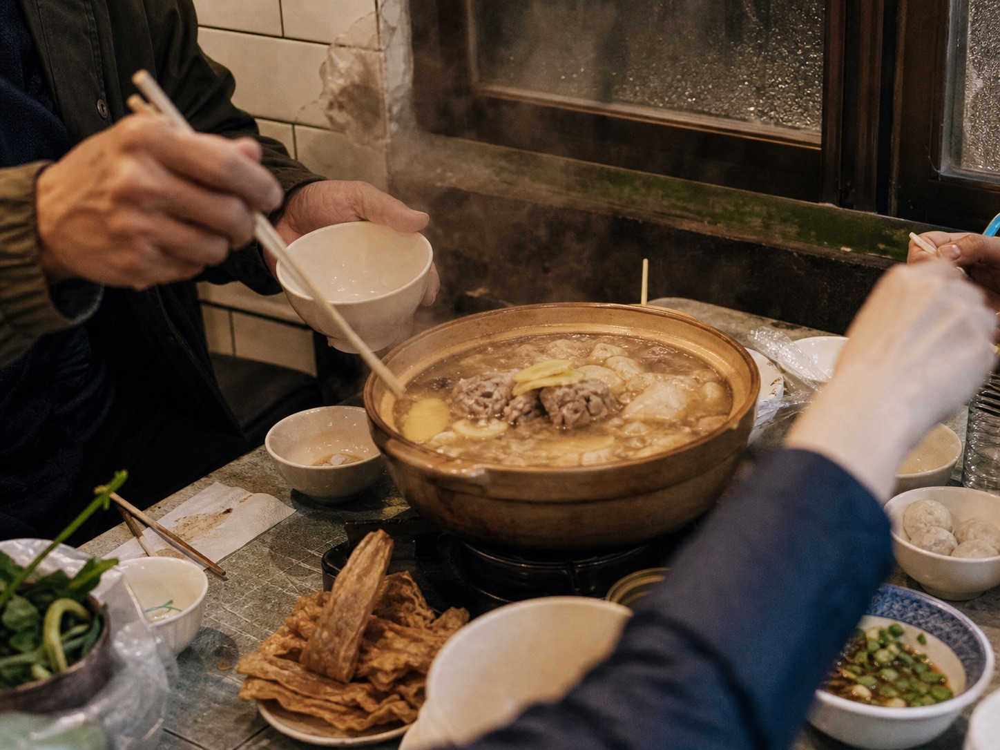
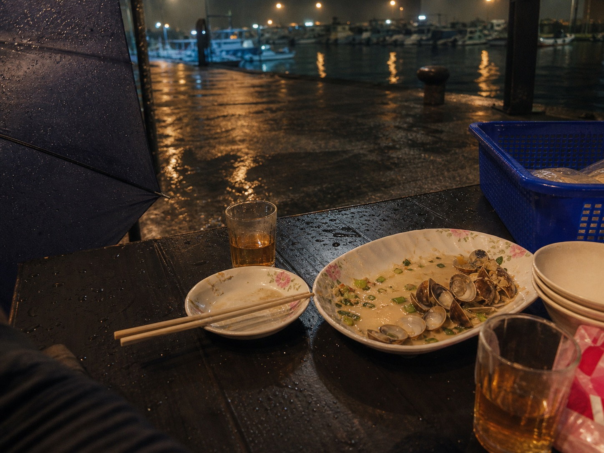

熱炒桌
人的手、碗盤、紅椅和燈光，是熱炒最真實的畫面。
圓桌、紅椅、快炒香氣、白飯和一盤接一盤的菜，讓朋友、同事、家人甚至剛認識的人自然靠近。熱炒本來就是台灣人的夜晚語言。
新熱炒運動想把這份城市夜晚的聲音、味道與人情好好留下來。
很多人一看就懂，那是台灣城市夜晚的共同畫面。
快炒聲、杯盤聲和老闆的招呼，讓夜晚有了節奏。
菜一轉過來，關係也跟著靠近。
巷弄、港邊與商圈，都能因為一張桌留下記憶。
快炒、海產、白飯、湯、圓桌與紅椅，讓朋友、同事、家人自然分食。新熱炒運動想抓住的，是那種一下班就有人說「走啦」的城市默契。
快炒聲與熱氣，是城市夜晚最直接的開場。
每一道菜都要轉過一圈，關係也跟著靠近。
台式海產與快炒，讓港邊、夜市、老街都能展開故事。
熱炒最珍貴的，是不用約得太正式，卻能留下很深的記憶。
新熱炒運動關心的是熱炒桌如何讓人坐下、開口、分享、碰杯、留下記憶。
我們從「桌」開始看熱炒：人圍成一圈，關係也在那裡靠近。
水岸、巷弄、商圈與燈光，讓熱炒桌從一餐飯延伸成一段城市記憶。
音樂是氛圍與記憶的延伸，讓桌邊聊天、碰杯與夜色有自己的節奏。
焦點回到坐下、夾菜、聊天、分享與準備離開的日常時刻。
聲音可以從鍋鏟、杯盤、招呼聲開始，再慢慢接上音樂。好的現場會貼著聊天的節奏，讓那晚多一個大家會記得的聲音。
鍋鏟、杯盤、招呼聲和音樂可以一起成為現場節奏，讓表演自然靠近餐桌。
攝影、短影音與訪談記錄桌邊的人、菜、聲音和離場前的那一刻。
人的手、碗盤、紅椅和燈光，是熱炒最真實的畫面。

磨石子、紅椅與不鏽鋼，是記憶的觸感。

氣氛影像
新熱炒適合和店家、品牌、音樂人、攝影師、地方文化工作者一起完成。你可以帶來一道菜、一段聲音、一個地方，或一個關於城市夜晚的故事。
留下熱炒桌邊的故事、人物與城市夜晚。
讓品牌進入桌、人、地方與內容，成為體驗的一部分。
以短影音、攝影、訪談與文化記憶，留下日後還會被分享、被想起的影像與故事。
我們可以先從你熟悉的那張桌聊起，再一起想它適合長成什麼樣的聚場。
新熱炒運動目前正在整理合作想法與現場可能性；下一次公開邀請、時間地點與現場內容，會在準備好後分享。
頁面圖片用來傳達熱炒與城市夜晚氛圍，實際內容以後續公開資訊為準。